8. Container and Instance Groups
Automation controller runs each job in an instance group. In Koios Automation Platform there are two kinds:
Container groups run each job as a pod of its own in a Kubernetes namespace. The
defaultinstance group of a new platform is a container group that runs jobs in the namespace of the platform.Instance groups of instances run jobs on the instances that belong to them: the control instances (the task pods, in the
controlplanegroup) or execution nodes added to the mesh (see Managing Capacity With Instances).
For execution environments, see Execution Environments in the User Guide.
8.1. Instance Groups
Instance groups can be assigned to:
Organizations
Inventories
Job Templates
When a job runs, it goes to the first instance group with capacity, looking at the groups of the job
template first, then those of its inventory, then those of its organization (see
Control Where a Job Runs). Prevent instance group fallback on a job
template or inventory stops the search there. If none of the groups has capacity, the job waits; it
does not fall back to default. Only a job whose resources have no instance group at all runs in
default.
A new platform has two groups:
controlplane: the control instances. It runs project updates and other internal work; you do not assign it to resources.default: the container group where jobs run unless something says otherwise.
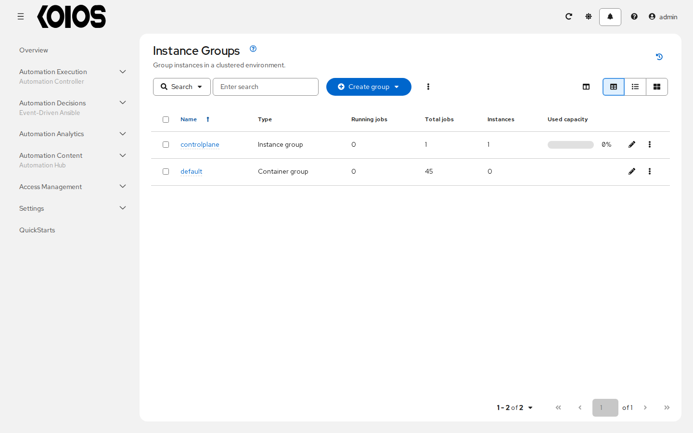
Create more groups to send work to particular places: a container group with its own namespace, node selector or resources, or an instance group of execution nodes in another network.
Do not name an instance group like an instance.
8.1.1. Configuring Instance Groups from the API
Instance groups can be created by POSTing to /api/controller/v2/instance_groups as a system administrator.
Once created, instances can be associated with an instance group with:
HTTP POST /api/controller/v2/instance_groups/x/instances/ {'id': y}`
An instance that is added to an instance group will automatically reconfigure itself to listen on the group’s work queue. See the following section, Instance group policies, for more details.
8.1.2. Instance group policies
You can configure automation controller instances to automatically join Instance Groups when they come online by defining a policy. These policies are evaluated for every new instance that comes online.
Instance Group Policies are controlled by three optional fields on an Instance Group:
policy_instance_percentage: This is a number between 0 - 100. It guarantees that this percentage of active automation controller instances will be added to this Instance Group. As new instances come online, if the number of Instances in this group relative to the total number of instances is less than the given percentage, then new ones will be added until the percentage condition is satisfied.policy_instance_minimum: This policy attempts to keep at least this many instances in the Instance Group. If the number of available instances is lower than this minimum, then all instances will be placed in this Instance Group.policy_instance_list: This is a fixed list of instance names to always include in this Instance Group.
The Instance Groups list view from the automation controller User Interface provides a summary of the capacity levels for each instance group according to instance group policies:
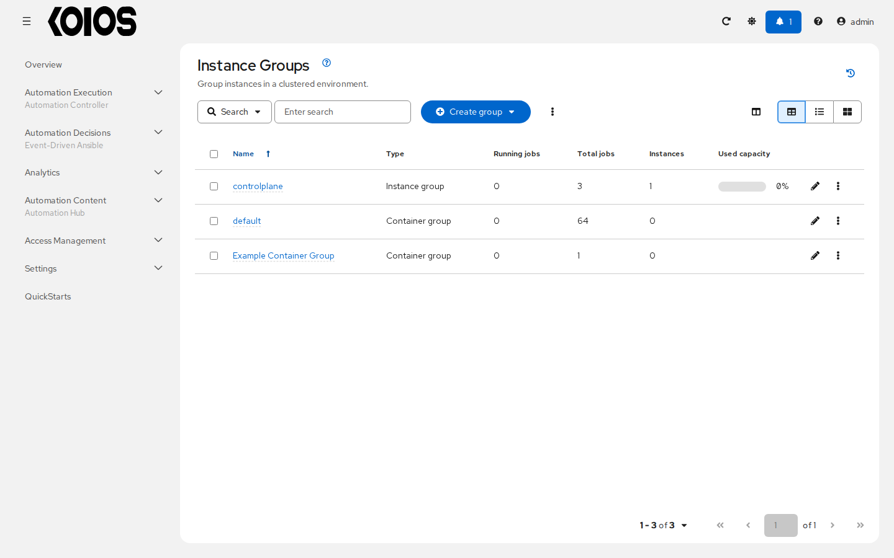
See Create an instance group for further detail.
8.1.3. Notable policy considerations
policy_instance_percentageandpolicy_instance_minimumboth set minimum allocations. The rule that results in more instances assigned to the group will take effect. For example, if you have apolicy_instance_percentageof 50% and apolicy_instance_minimumof 2 and you start 6 instances, 3 of them would be assigned to the Instance Group. If you reduce the number of total instances in the cluster to 2, then both of them would be assigned to the Instance Group to satisfypolicy_instance_minimum. This way, you can set a lower bound on the amount of available resources.Policies do not actively prevent instances from being associated with multiple Instance Groups, but this can effectively be achieved by making the percentages add up to 100. If you have 4 instance groups, assign each a percentage value of 25 and the instances will be distributed among them with no overlap.
8.1.4. Manually pinning instances to specific groups
If you have a special instance which needs to be exclusively assigned to a specific Instance Group but don’t want it to automatically join other groups via “percentage” or “minimum” policies:
Add the instance to one or more Instance Groups’
policy_instance_listUpdate the instance’s
managed_by_policyproperty to beFalse.
This will prevent the Instance from being automatically added to other groups based on percentage and minimum policy; it will only belong to the groups you’ve manually assigned it to:
HTTP PATCH /api/controller/v2/instance_groups/N/ { "policy_instance_list": ["special-instance"] } HTTP PATCH /api/controller/v2/instances/X/ { "managed_by_policy": False }
8.1.5. Job Runtime Behavior
When you run a job associated with a instance group, some behaviors worth noting are:
If a cluster is divided into separate instance groups, then the behavior is similar to the cluster as a whole. If two instances are assigned to a group then either one is just as likely to receive a job as any other in the same group.
As automation controller instances are brought online, it effectively expands the work capacity of the system. If those instances are also placed into instance groups, then they also expand that group’s capacity. If an instance is performing work and it is a member of multiple groups, then capacity will be reduced from all groups for which it is a member. De-provisioning an instance will remove capacity from the cluster wherever that instance was assigned.
Note
Not all instances are required to be provisioned with an equal capacity.
8.1.6. Control Where a Job Runs
If any of the job template, inventory, or organization has instance groups associated with them, a job ran from that job template will not be eligible for the default behavior. That means that if all of the instances inside of the instance groups associated with these 3 resources are out of capacity, the job will remain in the pending state until capacity becomes available.
The order of preference in determining which instance group to submit the job to is as follows:
job template
inventory
organization (by way of project)
If instance groups are associated with the job template, and all of these are at capacity, then the job will be submitted to instance groups specified on inventory, and then organization. Jobs should execute in those groups in preferential order as resources are available.
The global default group can still be associated with a resource, just like any of the custom instance groups defined in the playbook. This can be used to specify a preferred instance group on the job template or inventory, but still allow the job to be submitted to any instance if those are out of capacity.
As an example, by associating group_a with a Job Template and also associating the default group with its inventory, you allow the default group to be used as a fallback in case group_a gets out of capacity.
In addition, it is possible to not associate an instance group with one resource but designate another resource as the fallback. For example, not associating an instance group with a job template and have it fall back to the inventory and/or the organization’s instance group.
This presents two other great use cases:
Associating instance groups with an inventory (omitting assigning the job template to an instance group) will allow the user to ensure that any playbook run against a specific inventory will run only on the group associated with it. This can be super useful in the situation where only those instances have a direct link to the managed nodes.
An administrator can assign instance groups to organizations. This effectively allows the administrator to segment out the entire infrastructure and guarantee that each organization has capacity to run jobs without interfering with any other organization’s ability to run jobs.
Likewise, an administrator could assign multiple groups to each organization as desired, as in the following scenario:
There are three instance groups: A, B, and C. There are two organizations: Org1 and Org2.
The administrator assigns group A to Org1, group B to Org2 and then assign group C to both Org1 and Org2 as an overflow for any extra capacity that may be needed.
The organization administrators are then free to assign inventory or job templates to whichever group they want (or just let them inherit the default order from the organization).
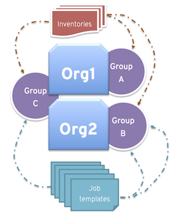
Arranging resources in this way offers a lot of flexibility. Also, you can create instance groups with only one instance, thus allowing you to direct work towards a very specific Host in the automation controller cluster.
8.1.7. Instance group capacity limits
Sometimes there is external business logic which may drive the desire to limit the concurrency of jobs sent to an instance group, or the maximum number of forks to be consumed.
For traditional instances and instance groups, there could be a desire to allow two organizations to run jobs on the same underlying instances, but limit each organization’s total number of concurrent jobs. This can be achieved by creating an instance group for each organization and assigning the value for max_concurrent_jobs.
For container groups, automation controller is generally not aware of the resource limits of the OpenShift cluster. There may be limits set on the number of pods on a namespace, or only resources available to schedule a certain number of pods at a time if no auto-scaling is in place. Again, in this case, we can adjust the value for max_concurrent_jobs.
Another parameter available is max_forks. This provides additional flexibility for capping the capacity consumed on an instance group or container group. This may be used if jobs with a wide variety of inventory sizes and “forks” values are being run. This way, you can limit an organization to run up to 10 jobs concurrently, but consume no more than 50 forks at a time.
max_concurrent_jobs: 10
max_forks: 50
If 10 jobs that use 5 forks each are run, an 11th job will wait until one of these finishes to run on that group (or be scheduled on a different group with capacity).
If 2 jobs are running with 20 forks each, then a 3rd job with a task_impact of 11 or more will wait until one of these finishes to run on that group (or be scheduled on a different group with capacity).
For container groups, using the max_forks value is useful given that all jobs are submitted using the same pod_spec with the same resource requests, irrespective of the “forks” value of the job. The default pod_spec sets requests and not limits, so the pods can “burst” above their requested value without being throttled or reaped. By setting the max_forks value, you can help prevent a scenario where too many jobs with large forks values get scheduled concurrently and cause the OpenShift nodes to be oversubscribed with multiple pods using more resources than their requested value.
To set the maximum values for the concurrent jobs and forks in an instance group, see Create an instance group in the User Guide.
8.1.8. Removing instances and instance groups
Control instances come and go with the task pods: scale task_replicas (see Clustering)
and the cluster removes the instances of pods that stop. Execution and hop nodes are removed from
Instances in the user interface, or by setting their node_state to deprovisioning in the
API (see Managing Capacity With Instances).
Instance groups you created are deleted from Instance Groups in the user interface or with a
DELETE to /api/controller/v2/instance_groups/<id>/. Do not delete controlplane or
default. For more about managing instance groups in the user interface, see
Instance Groups in the User Guide.
8.2. Container Groups
Automation controller supports Container Groups, which allow you to execute jobs in pods on Kubernetes or OpenShift clusters. These pods are created on demand and only exist for the duration of the job. This is known as the ephemeral execution model and ensures a clean environment for every job run.
Container groups are different from execution environments in that execution environments are container images: the container group decides where the pod runs, and the execution environment which image it runs. See Execution Environments in the User Guide for further detail.
8.2.1. Create a container group
Without a credential, automation controller manages the job pods with the service account of its own pods, and creates them in the namespace of the pod spec, by default the namespace of the platform (the default container group works this way). The job pod itself runs with the service account of its pod spec, default with automountServiceAccountToken: false. To run pods in another namespace of the same cluster, set metadata.namespace in the pod spec and give the service account of the controller permission to manage pods there, or use a credential. To use another identity or another cluster, give the container group an OpenShift or Kubernetes API Bearer Token credential with permission to manage pods in the namespace of the pod spec:
A ContainerGroup is a type of InstanceGroup that has an associated Credential that allows for connecting to an OpenShift cluster. To set up a container group, you must first have the following:
A namespace you can launch into (every cluster has a “default” namespace, but you may want to use a specific namespace)
A service account that has the roles that allow it to launch and manage Pods in this namespace
If you will be using execution environments in a private registry, and have a Container Registry credential associated to them in automation controller, the service account also needs the roles to get, create, and delete secrets in the namespace. If you do not want to give these roles to the service account, you can pre-create the
ImagePullSecretsand specify them on the pod spec for the ContainerGroup. In this case, the execution environment should NOT have a Container Registry credential associated, or automation controller will attempt to create the secret for you in the namespace.A token associated with that service account (OpenShift or Kubernetes Bearer Token)
A CA certificate associated with the cluster
This section describes creating a Service Account in an Openshift cluster (or K8s) in order to be used to run jobs in a container group via automation controller. After the Service Account is created, its credentials are provided to automation controller in the form of an Openshift or Kubernetes API bearer token credential. Below describes how to create a service account and collect the needed information for configuring automation controller.
To configure automation controller:
To create a service account, you may download and use this sample service account,
containergroup saand modify it as needed to obtain the above credentials.Apply the configuration from
containergroup-sa.yml:kubectl apply -f containergroup-sa.ymlCreate a token Secret for the service account; Kubernetes fills in its token and the CA of the cluster:
kubectl apply -n containergroup-namespace -f - <<'EOF' apiVersion: v1 kind: Secret metadata: name: containergroup-service-account-token annotations: kubernetes.io/service-account.name: containergroup-service-account type: kubernetes.io/service-account-token EOF
Wait until Kubernetes has filled in the Secret, then write the token and the CA certificate to files only you can read:
( set -euo pipefail; umask 077 S="secret/containergroup-service-account-token -n containergroup-namespace" for _ in $(seq 30); do [ -n "$(kubectl get $S -o jsonpath='{.data.token}')" ] && break; sleep 2; done kubectl get $S -o jsonpath='{.data.token}' | base64 -d > containergroup-sa.token kubectl get $S -o jsonpath='{.data.ca\.crt}' | base64 -d > containergroup-ca.crt chmod 600 containergroup-sa.token containergroup-ca.crt test -s containergroup-sa.token && test -s containergroup-ca.crt )
This token does not expire: delete the Secret to revoke it.
To use a token that expires instead, skip steps 3 and 4 and request one; the API server may grant a shorter duration than requested, so renew the credential before it expires. The CA certificate is the one of your kubeconfig:
( set -euo pipefail; umask 077 kubectl create token containergroup-service-account -n containergroup-namespace \ --duration=<time> > containergroup-sa.token kubectl config view --raw --minify \ -o jsonpath='{.clusters[0].cluster.certificate-authority-data}' | base64 -d > containergroup-ca.crt chmod 600 containergroup-sa.token containergroup-ca.crt )
Use the contents of
containergroup-sa.tokenandcontainergroup-ca.crtto provide the information for the OpenShift or Kubernetes API Bearer Token required for the container group.
To create a container group:
If needed, create an OpenShift or Kubernetes API Bearer Token credential for the container group; see Add a New Credential in the User Guide for detail.
Open Automation Execution > Infrastructure > Instance Groups. The list shows the instance groups and container groups, with their type, running and total jobs, instances and used capacity.
Click Create group and select Create container group.
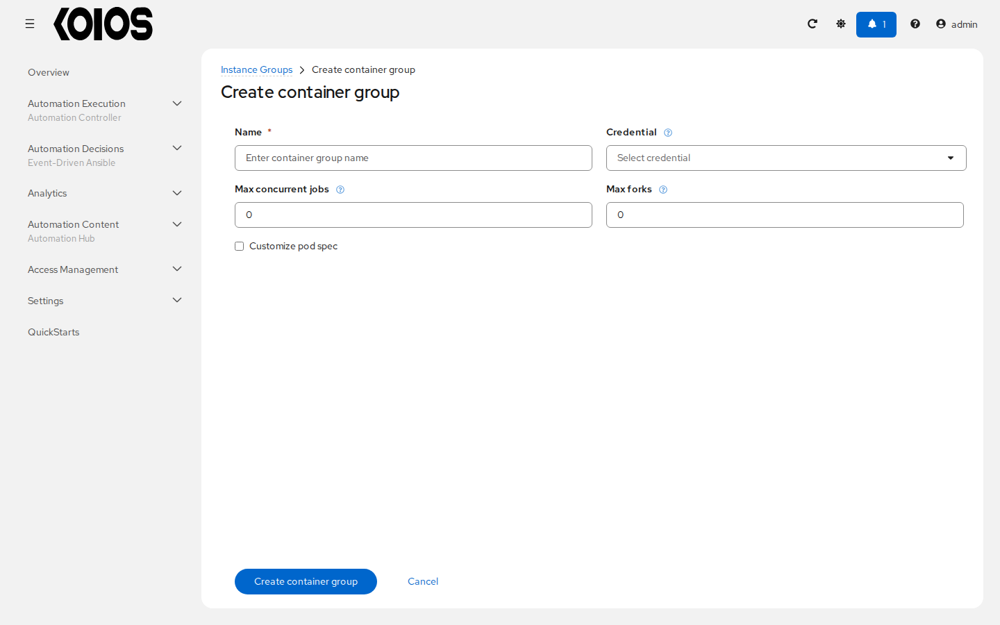
Enter a Name, and optionally select the Credential and set Max concurrent jobs and Max forks (see Instance group capacity limits;
0means no limit).Click Create container group.
8.2.2. Customize the pod spec
Automation controller provides a default pod specification, however, you can provide a custom YAML (or JSON) document that overrides it. To do so, check Customize pod spec: the Pod spec override field shows the default pod specification, with the namespace of the platform, the default service account and an anti-affinity that prefers to spread the job pods across nodes; change what you need, such as the namespace, node selectors, tolerations, imagePullSecrets or the resources of the container. For the available fields, see Pods in the Kubernetes documentation.
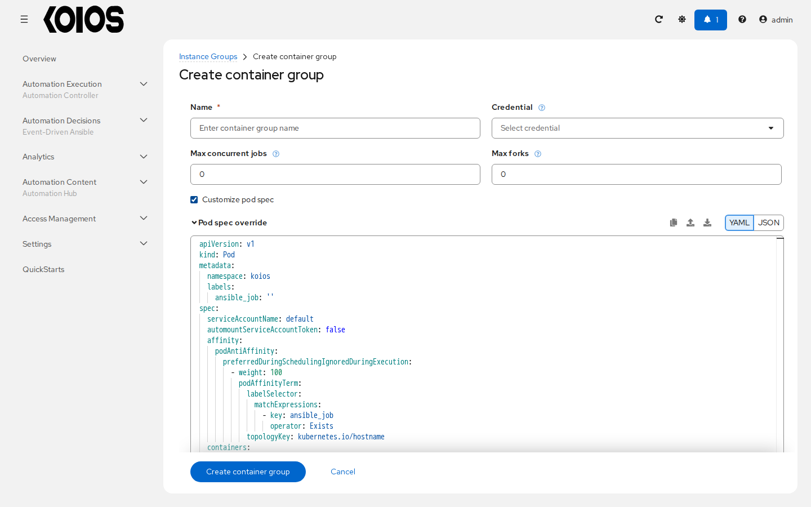
Note
The image used at job launch time is determined by which execution environment is associated with the job. If a Container Registry credential is associated with the execution environment, then automation controller will attempt to make a ImagePullSecret to pull the image. If you prefer not to give the service account permission to manage secrets, you must pre-create the ImagePullSecret and specify it on the pod spec, and omit any credential from the execution environment used.
Tip
In order to override DNS/host entries, use the hostAliases attribute on the pod spec. When the pod is created, these entries will be added to /etc/hosts in the container running the job.
spec:
hostAliases:
- ip: "127.0.0.1"
hostnames:
- "foo.local"
For more information, refer to Kubernetes’ documentation on Adding additional entries with hostAliases.
Once the container group is created, its Details tab opens, with Edit container group at the top and the Team Access, User Access and Jobs tabs. In the Instance Groups list, the Type column tells container groups and instance groups apart.
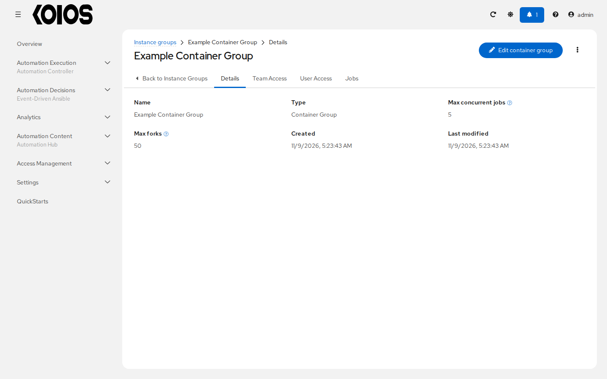
Note
Using a custom pod spec may cause issues on upgrades if the default pod_spec changes. Since any manifest can be applied to any namespace, with the namespace specified separately, most likely you will only need to override the namespace. The override is merged with the default pod spec, and the image and arguments of the job container are always set by automation controller from the execution environment of the job; other fields you copy into the override do not pick up later changes of the default pod spec.
8.2.3. Verify container group functions
To verify the deployment and termination of your container:
Create a test inventory and add the container group to its Instance groups. See Add a new inventory in the User Guide for detail.
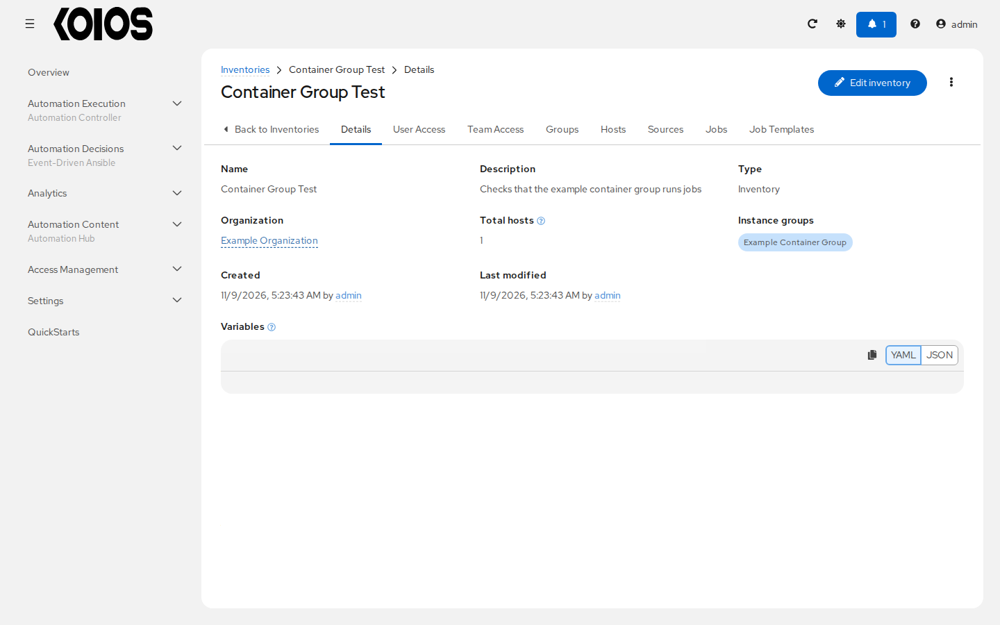
Create a
localhosthost in the inventory with these variables:
ansible_host: 127.0.0.1
ansible_connection: local
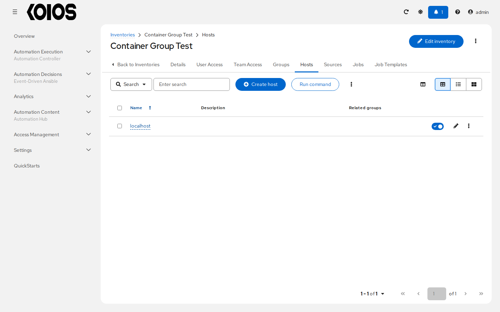
Click Run command and run the ping or setup module against
localhost(see Running Ad Hoc Commands). Any machine credential works for this test.
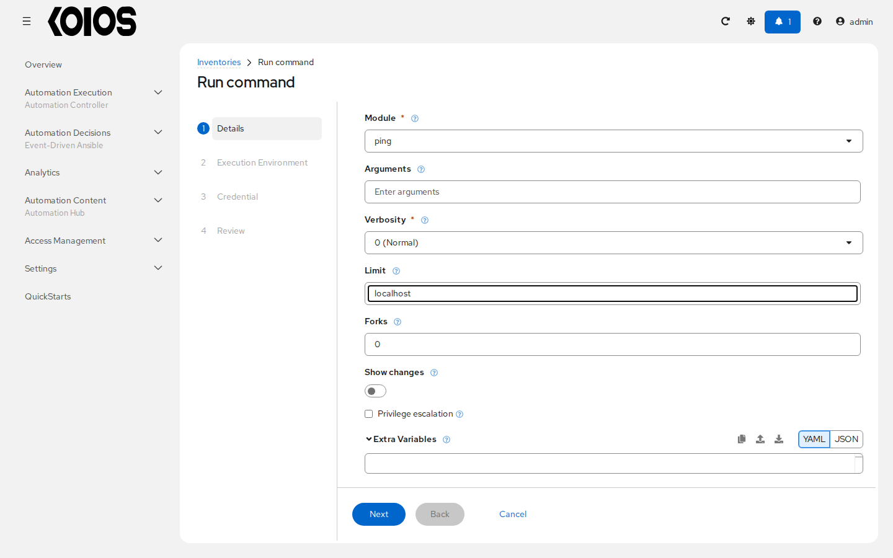
The output of the job shows that the pod ran the command successfully.
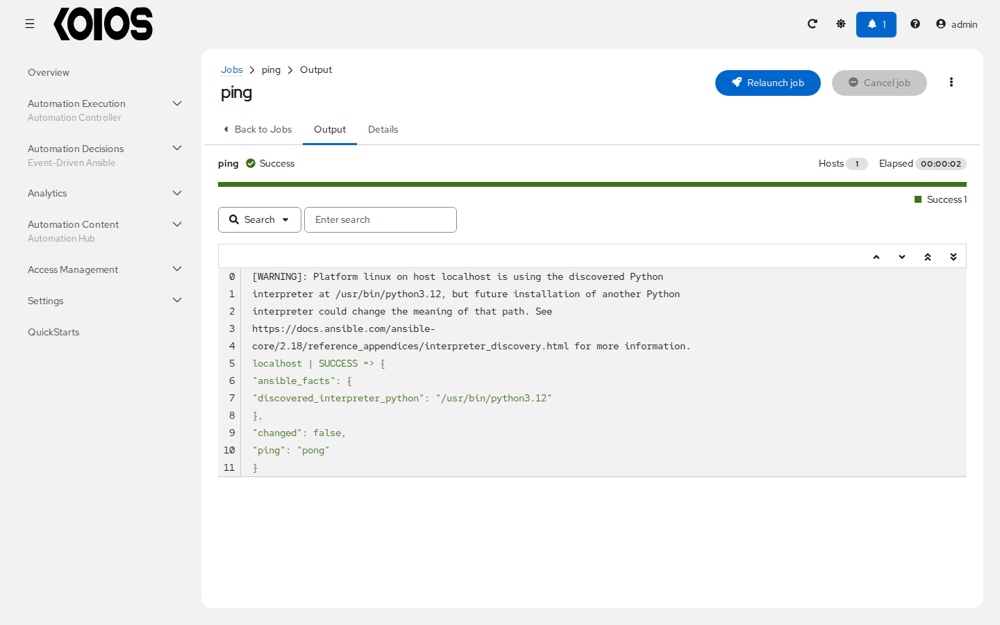
While the job runs, kubectl get pods -n <namespace> -w (or oc get pods) shows the job pod, named automation-job-<id>-<suffix>, appear and disappear.
8.2.4. View container group jobs
When you run a job associated with a container group, the Details tab of the job shows its Instance group, its Container group and the execution environment it used. The Jobs tab of the container group lists its jobs.
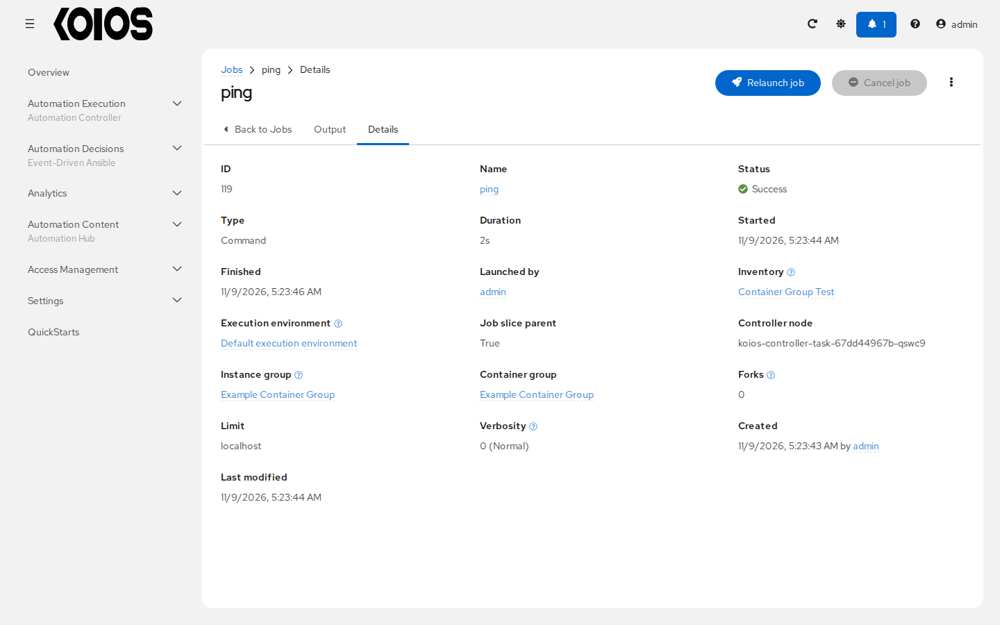
8.2.5. Kubernetes API failure conditions
When running a container group and the Kubernetes API responds that the resource quota has been exceeded, automation controller keeps the job in pending state. Other failures end the job in error, and its Output tab shows the failure reason, similar to the example here:
Error creating pod: pods is forbidden: User "system:serviceaccount:koios:example" cannot create resource "pods" in API group "" in the namespace "koios"
8.2.6. Container capacity limits
Capacity limits and quotas for containers are defined via objects in the Kubernetes API:
To set limits on all pods within a given namespace, use
ResourceQuotaandLimitRangeobjects. Refer to Resource Quotas and Limit Ranges in the Kubernetes documentation.To set limits directly on the pod definition launched by automation controller, see Customize the pod spec and set the resources of the container.
Note
Container groups do not use the capacity algorithm that normal nodes use. Use Max concurrent jobs and Max forks of the container group to limit how much work it accepts. If forks are configured in automation controller, that setting will be passed along to the container.